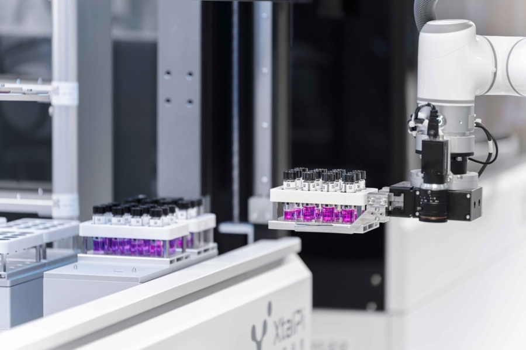
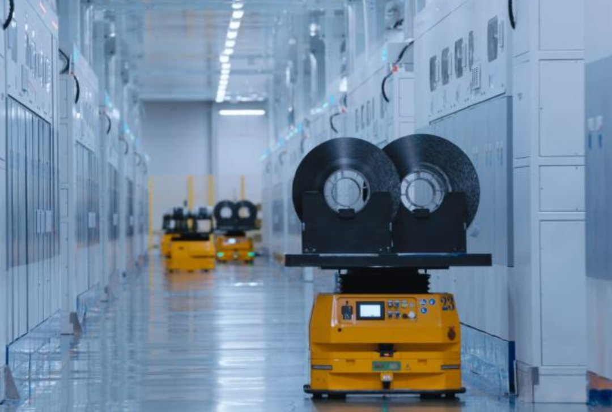
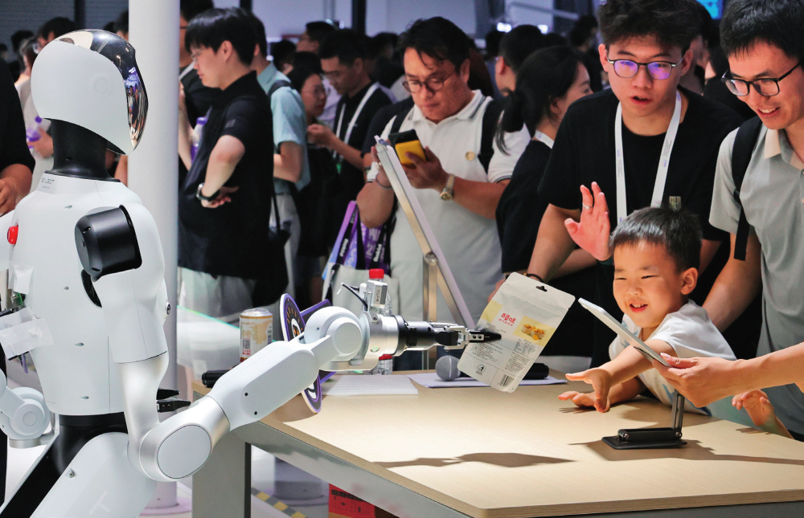
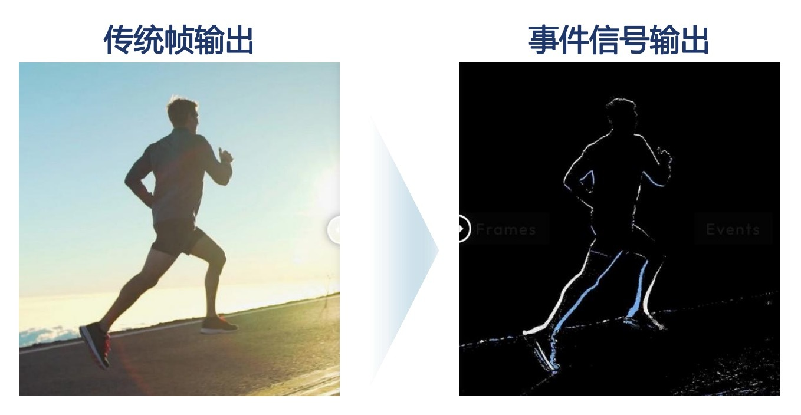
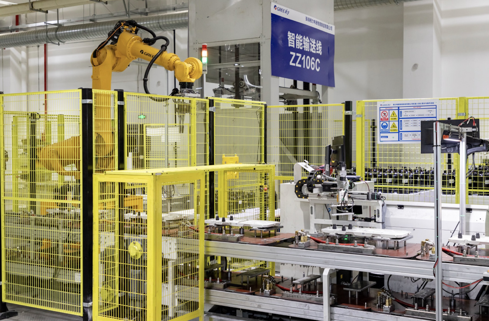
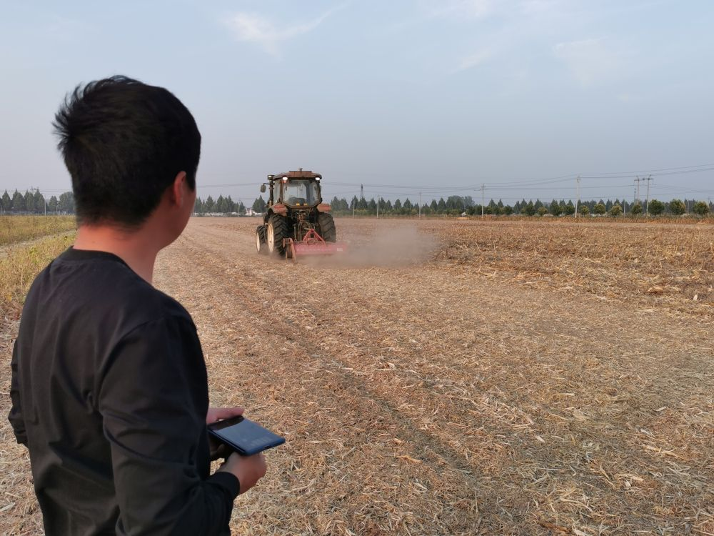

人工智能
——新质生产力的核心
01
定义与关系
人工智能是引领新一轮科技革命和产业变革的战略性技术，新质生产力是区别于传统生产力的先进生产力质态。二者的关系可以概括为：AI 是新质生产力的技术源头、要素重构的关键变量，也是产业升级的通用赋能技术。
人工智能
AI 与新质生产力的三重关系
传统生产力 vs 新质生产力
AI 重塑生产力三要素
创新 · 质优 · 先进
02
国家战略时间轴
从“人工智能+”写入政府工作报告，到国务院专项行动意见，再到“十五五”规划定位——政策链条在两年内迅速闭合，这是 AI 作为新质生产力获得制度确认的过程。
2025.03
“人工智能+”写入政府工作报告
提出持续推进“人工智能+”行动，把数字技术与制造优势、市场优势结合，赋能产业升级。
政策信号
首次将“人工智能+”写入政府工作报告
这是 AI 从技术议题上升为国家战略议题的关键起点。报告明确提出，要持续推进“人工智能+”行动，将数字技术与我国的制造优势、市场优势紧密结合，推动 AI 赋能千行百业的产业升级。
2025.08
国务院印发《关于深入实施“人工智能+”行动的意见》
系统部署 6 大重点行动与 8 项基础支撑，设定 2027 / 2030 / 2035 三阶段目标，标志 AI 发展进入以深度融合为重点的新阶段。
顶层设计
系统部署“人工智能+”行动路线图
该意见首次系统部署 6 大重点行动与 8 项基础支撑，并设定 2027 / 2030 / 2035 三阶段目标。这标志着中国 AI 发展从“单点技术突破”正式进入以深度融合为重点的产业落地新阶段。
2025.09
提出《“人工智能+”国际合作倡议》
聚焦民生福祉、科技进步、产业应用、文化繁荣、人才培养五大领域，把 AI 作为国际公共产品。
国际合作
推动 AI 成为国际公共产品
倡议聚焦 民生福祉、科技进步、产业应用、文化繁荣、人才培养 五大领域，主张把 AI 作为国际公共产品，体现了中国在全球 AI 治理中的开放姿态与责任担当。
2025.10
“十五五”规划建议：AI 列为新质生产力重点方向
明确“全面实施‘人工智能+’行动”，加强 AI 同产业发展、民生保障、社会治理相结合。
规划定位
AI 正式纳入“十五五”规划重点方向
规划建议明确要求 “全面实施‘人工智能+’行动”，并强调加强 AI 同产业发展、民生保障、社会治理相结合。这标志着 AI 从产业政策上升为国家中长期发展的核心战略方向。
2025.12
治理框架 2.0 与立法推进
《人工智能安全治理框架》2.0 版发布，形成“包容审慎、分类分级”的治理模式，在发展与安全之间求平衡。
治理体系
AI 安全治理框架升级至 2.0 版
新版框架形成 “包容审慎、分类分级” 的治理模式，在鼓励创新与防范风险之间寻求平衡。这是中国 AI 治理体系走向成熟的重要标志，为产业健康发展提供制度保障。
2026.01
八部门印发《“人工智能+制造”专项行动实施意见》
提出到 2027 年推动 3-5 个通用大模型在制造业深度应用、推出 1000 个高水平工业智能体。
制造落地
“人工智能+制造”专项行动落地
八部门联合印发实施意见，提出到 2027 年推动 3-5 个通用大模型在制造业深度应用，并推出 1000 个高水平工业智能体。这是 AI 赋能实体经济、推动新型工业化的标志性行动。
03
承载产业与行业标杆
左侧为承载新质生产力的三大产业分类，右侧为全部行业标杆卡面：停留或拖动卡面时，左侧同步展开该标杆所属的产业分类。
承载产业分类
新能源汽车、光伏风电、储能、生物医药、人工智能、高端装备制造等，是新质生产力最集中、最活跃的承载领域。
- 代表领域：新能源汽车、光伏风电、储能、生物医药、人工智能、高端装备制造。
- AI 深度嵌入：AI 既是人工智能产业本身的核心，也深度赋能自动驾驶、智能运维、AI 制药、智能控制等方向。
AI 是战略性新兴产业的“公共技术底座”。
量子信息、类脑智能、空天深海开发、合成生物、前沿新材料等，代表新质生产力的前沿探索方向，是抢占未来竞争制高点的关键。
- 代表领域：量子信息、类脑智能、空天深海开发、合成生物、前沿新材料。
- AI 与未来产业交融：类脑智能本身就是 AI 的前沿分支；量子计算与 AI 结合催生量子机器学习；AI 加速合成生物与新材料研发。
AI 是未来产业最重要的孵化器与加速器。
通过数字化、智能化、绿色化改造，传统产业实现降本增效、焕发新生，同样是发展新质生产力的重要内容，而非被抛弃的对象。
- 改造路径：数字化 → 智能化 → 绿色化。
- AI 是核心引擎：AI 优化工艺参数、预测设备故障、调度生产流程、质检产品缺陷。
AI 让传统产业“老树发新芽”，是转型为新质生产力的关键路径。
三大承载产业共对应 8 个行业标杆：战略性新兴产业 2 个、未来产业 2 个、传统产业数字化升级 4 个；右侧为全部标杆卡面。
行业标杆
全部行业标杆
8 个标杆
战略性新兴产业

生物医药 · AI 原生
晶泰科技 · AI 辅助新药研发
利用 AI 大模型做药物分子筛选与结构预测，是 AI 赋能生物医药的标杆企业。
- AI 加速分子筛选：在虚拟空间快速模拟分子结构，筛选潜在有效候选药物。
- 实验室自动化：机器人实验平台与 AI 预测闭环迭代，实现“干湿实验”高效协同。
- 药物前期分子筛选周期从数年压缩到数月，底层研发范式被重塑。
战略性新兴产业

新能源 · 灯塔工厂
宁德时代动力电池智能工厂
新能源战略性新兴产业代表，动力电池灯塔工厂。
- AI 视觉质检：全产线 AI 视觉检测电池缺陷，大幅提升良品率与一致性。
- AI 工艺优化：工艺参数实时优化，数字孪生车间与工业互联网协同。
- 从材料、极片、装配到检测全流程数字化管控，支撑新能源汽车产业快速扩张。
未来产业

具身智能 · 工业大模型
上汽“能仔 1 号”人形机器人
上汽集团人形机器人“能仔 1 号”落地动力电池产线，依托工业大模型、机器视觉与数字孪生技术，完成电芯抓取、物料上料、质检等工序。
- 具身智能 + 工业大模型：机器人理解产线任务，自主完成多工序协同作业。
- 数字孪生 + 机器视觉：虚实联动调试与在线视觉质检，显著提升产线柔性。
- 劳动资料升级：人形机器人成为新型生产工具，产线可快速切换车型与工艺。
前沿意义：具身智能正从实验室走向量产产线，是 AI 与制造深度融合的标志性方向。
未来产业

类脑智能 · 类脑芯片
时识科技 Speck™ 类脑 SoC
全球首款量产感存算一体类脑 SoC，集成动态视觉传感器，内置 32 万脉冲神经元，面向端侧动态视觉场景。
- 感存算一体：感知、存储、计算集成于单芯片，突破传统架构的功耗与时延瓶颈。
- 32 万脉冲神经元：以脉冲神经网络模拟人脑工作机制，实现毫秒级动态视觉响应。
- 端侧场景：面向机器人、无人机、智能安防等低功耗实时视觉应用。
前沿意义：类脑智能本身就是 AI 的前沿分支，为端侧智能提供全新的算力范式。
传统产业数字化升级

高端装备 · 传统制造升级
格力金湾智能工厂
工信部首批领航级智能工厂，自研五轴工业母机、工业机器人，打造数字孪生车间。
- AI 优化加工参数：车间数据实时采集、动态调优，减少试错与废品，良品率显著提升。
- 劳动资料升级：自研高端数控机床替代进口设备，加工效率提升 80%。
- 劳动者转型：流水线操作工转为工艺工程师、数字孪生建模与设备运维人员。
配套小案例 · 吉林化纤：老纺织企业转型碳纤维新材料，AI 辅助工艺优化与质量检测，碳丝产能全球第一。
传统产业数字化升级
能源石化 · 数字化改造
抚顺石化智能化炼化基地
上线昆仑 MES 自研生产管控系统，传统石化企业数字化改造的典型案例。
- AI 优化工艺参数：全流程能耗、排放实时监控，AI 模型自动寻优。
- 生产全流程数据打通，统计效率提升 70%，数据准确率提升 40%。
配套小案例 · 南方电网“大瓦特”：配网抢修大模型，AI 自动识别故障、调度抢修资源，几分钟定位故障点。
传统产业数字化升级
交通物流 · 自动化码头
上海港无人集卡智慧港口
上海洋山港自动化码头，全球领先的无人集装箱港口。
- AI 调度算法：实时统筹船舶、集装箱、无人车辆，实现全局最优调度。
- 劳动资料升级：无人集卡、自动岸桥、自动化轨道吊，5G + 车路协同全程自动化。
- 码头 24 小时不间断作业，单箱装卸效率持续提升，降低人工安全风险。
传统产业数字化升级

现代农业 · 北斗 + AI 决策
永城万亩萝卜智慧农场
河南永城蒋口镇萝卜智慧农场，全链条智慧种植示范基地。
- AI 数据驱动生产：依据土壤墒情、气象、作物长势自动精准灌溉、变量施肥，实现“数据种地”。
- 劳动资料升级：北斗无人拖拉机、智能水肥一体机、植保无人机、田间传感器实时采集数据。
配套小案例 · 中粮家佳康智慧养猪场：AI 巡检机器人与智能饲喂系统，实时监测生猪健康，精准投喂，降低疫病风险。
04
AI 作用 · 数据看板
从全球与全国尺度的产业规模、行业渗透、企业采用率与赋能强度等维度，用可视化数据呈现人工智能对新质生产力的作用；标注"公开资料整理"的数值为趋势示意，不作为精确统计口径。
0
2030 年 AI 对全球 GDP 的增量贡献（公开资料整理）
0
2030 年 AI 对全球 GDP 增量的贡献占比（公开资料整理）
0
中国数字经济占 GDP 比重（公开资料整理）
0
全球大型企业 AI 采用率（公开资料整理）
AI 赋能作用 · 六维评估
5 分制评分：由公开资料与本页案例归纳
产业规模趋势 · 中国 vs 全球
公开资料整理，指数化（2020 = 100）
行业 AI 渗透率
12 个行业的 AI 应用渗透率（%，公开资料整理）
企业 AI 采用率 · 三年变化
大／中／小型企业采用率对比（%，公开资料整理）
行业投入增速 vs 渗透率
气泡大小＝行业 AI 市场规模（示意）
AI 重塑生产力三要素
贡献占比示意：智能装备与智能体对劳动资料改造最直接
数据说明：图表数值由公开资料与页面案例归纳整理，部分为趋势示意，不作为精确统计口径。
05
总结
新质生产力的核心逻辑，是以创新破局、以质量增效、以科技赋能产业；人工智能是其中的核心引擎与战略抓手。